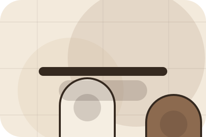
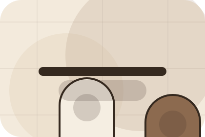
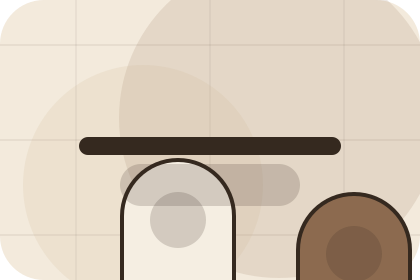
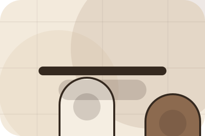
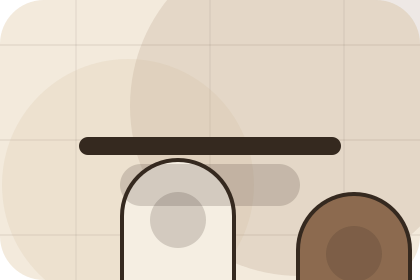

Context
Shop gives the page a specific angle instead of repeating the navigation label.
Beauty
Apothecary routine journal for self-care confidence.

Home / 02
Goal adds commerce context to the home route, using the apothecary routine journal structure to support self-care confidence before visitors choose a next step.
Skin uses ingredient education cards and focused copy to make the decision easier to scan, aligning the section with self-care confidence rather than filling space.
Open BrandGoal gives the page a specific angle instead of repeating the navigation label.
The ingredient education cards show what to compare, what to avoid, and what matters most for beauty, cosmetics & aesthetic products visitors.
The final cue points to a useful internal route so the section keeps the journey moving.
Home / 03
Concerns adds commerce context to the home route, using the apothecary routine journal structure to support self-care confidence before visitors choose a next step.
Skin uses ingredient education cards and focused copy to make the decision easier to scan, aligning the section with self-care confidence rather than filling space.
Open ShopConcerns gives the page a specific angle instead of repeating the navigation label.
The ingredient education cards show what to compare, what to avoid, and what matters most for beauty, cosmetics & aesthetic products visitors.
The final cue points to a useful internal route so the section keeps the journey moving.
Home / 04
Promise defines the better state Skin is built to create, with enough detail to make the promise believable.
A routine site with restrained product education, ingredient notes, tactile cards, and consultation routes. The section grounds that direction in concrete benefits, visible tradeoffs, and a next route visitors can use when the promise feels relevant.
Open ProductsSkin structures promise around better state, practical gain, and a clear next route so visitors can compare the block quickly before they build a routine.
Build RoutineHome / 06
Routine adds commerce context to the home route, using the apothecary routine journal structure to support self-care confidence before visitors choose a next step.
Skin uses ingredient education cards and focused copy to make the decision easier to scan, aligning the section with self-care confidence rather than filling space.
Open IngredientsRoutine gives the page a specific angle instead of repeating the navigation label.
The ingredient education cards show what to compare, what to avoid, and what matters most for beauty, cosmetics & aesthetic products visitors.

The final cue points to a useful internal route so the section keeps the journey moving.
Home / 07
Results shows what changes after the work: clearer decisions, visible progress, and proof points that connect the offer to real outcomes.
The layout connects before-and-after thinking with measured outcomes, making the result easy to scan without promising what the business cannot guarantee.
Open ResultsThe uncertainty, delay, or missed opportunity visitors bring into results.
The clearer, safer, or more valuable state Skin is designed to support.
The visible cue that connects results to a believable decision, not a loose claim.
Home / 08
Reviews converts customer proof into a useful buying signal: the problem, the experience, and what changed afterward.
Proof stays believable by focusing on situation, service experience, and practical change rather than vague praise or unsupported results.
Open ResultsWhat the visitor needed before choosing Skin, written with enough context to feel real.
How the service, product, or support felt during the process, not just that it was good.
What became easier to decide, complete, buy, book, or trust after the interaction.
Home / 09
Questions handles buying doubts directly so visitors can understand timing, fit, limits, and the safest next step.
Answers are short by design: enough to remove hesitation, not so much that the page turns into documentation before the visitor can act.
Open Contact
Questions gives the page a specific angle instead of repeating the navigation label.

The ingredient education cards show what to compare, what to avoid, and what matters most for beauty, cosmetics & aesthetic products visitors.

The final cue points to a useful internal route so the section keeps the journey moving.
Skin starts with a focused intake so the recommendation matches the visitor's context, risk, timing, and readiness.
Each route explains inclusions, exclusions, documents, timing, and the decision points that affect final delivery.
The theme uses apothecary routine journal, ingredient education cards, and routine finder, ingredient glossary, product filter rather than a shared template rhythm.
Muted product education hero
Select the closest route and Skin keeps the next step, proof, and follow-up expectation aligned with self-care confidence.
Home / 10
Skin closes the home route with a clear action, a quick reminder of the value, and a low-friction way to build a routine.
Visitors who are ready can use the primary action. Visitors who are still comparing can scan the section links, proof, and support routes before they build a routine.
Build RoutineThe final block keeps the choice simple: act now, compare one more proof route, or send enough detail for a focused response.
Build Routineself-care confidence
A routine site with restrained product education, ingredient notes, tactile cards, and consultation routes. Home ends with a direct path to build a routine, plus enough context for visitors who still need to compare.
 Build Routine
Build Routine